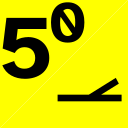

Signs and Signals on the LTA
Inspired by a combination of tram and railroad "F.1" signal rulebooks from Hungary, but conceptualized as pennants rather than boards (hence the iso triangles! and hence the seam where two get stitched together with supplemental information). Also stole the "S" from Anglosphere rapid-transit spotting points.
blue-stop-128.png
Spot head end here
blue-stop1-128.png
One car: spot head end here
blue-stop2-128.png
 Two cars: spot head end here
Two cars: spot head end here
blue-stop3-128.png
Three cars: spot head end here
blue-voltage-128.png
green-128.png
Track speed or consist's max speed
red-stop-128.png
Stop! End of track or MOW is out on the job
yellow-crossover10-128.png
10 dm/t ("dec") over diamond
yellow-crossover25-128.png
", 25 dec
yellow-crossover40-128.png
", 40 dec
yellow-crossover50-128.png
", 50 dec
yellow-diode-128.png
Section break with diode bridge (may pass without cutting out)
yellow-insulator-128.png
Section break (conventional insulator, cut out)
yellow-punct10-128.png
10 dec over point fault
yellow-punct25-128.png
", 25 dec
yellow-punct40-128.png
", 40 dec
yellow-punct50-128.png
", 50 dec
yellow-speed10-128.png
10 dec until otherwise
yellow-speed25-128.png
", 25 dec
yellow-speed40-128.png
", 40 dec
yellow-speed50-128.png
", 50 dec
yellow-turnout10-128.png
 10 dec over turnout
10 dec over turnout
yellow-turnout25-128.png
", 25 dec
yellow-turnout40-128.png
", 40 dec
yellow-turnout50-128.png
", 50 dec
lightly modified from file generated by apindex 2.2